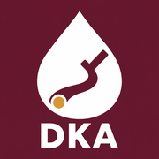

ICU DKA pathway
Example values from a made-up patient are filled in. Tap Clear to start your own.
| Date | Time | BG mg/dL | Change | Current units/hr | New units/hr | IVF | Comments |
|---|
Logged rates only start at the first BG, so ED time isn't counted unless you enter the pump's volume infused. The pump number wins.
| Bag | Hung | Ended | Ran | Infused mL | Pump reading |
|---|
Values come from the Labs tab.
Rechecks: K 1 hour after the last KCl dose finishes (2 hours if K was over 5). Mg and Phos with the next 4-hour BMP.
Only logged BMPs count toward the 2 closed gaps. Blank boxes are skipped, so a K-only recheck doesn't count as a BMP.
| Time | Glu | Na | cNa | Cl | HCO₃ | Gap | pH | K | Mg | Phos |
|---|
Resolved (this app): 2 closed gaps (12 or less) on consecutive BMPs, plus BG under 200, plus HCO₃ 15 or higher or venous pH above 7.3. The 2-gap rule is the unit's (clinical educator); the rest is the 2009 ADA criteria.
Gap = Na − (Cl + HCO₃). If the EHR reports the gap, use the lab's number and its normal range.
The switch (2024 consensus): start a basal-bolus regimen and give the basal insulin at least 1–2 hours before the drip stops. Without that overlap, DKA can come back within hours. Insulin-naive: about 0.3–0.6 units/kg/day total. Already on basal at home: the usual dose can continue, even while the drip runs. The provider orders the doses.
The pathway keeps the 0.05 rate "until converting to subcutaneous insulin" and gives no more detail. Ask whether a newer order set is in the EHR.
Corrected sodium: high glucose pulls water out of cells and dilutes sodium (pseudohyponatremia). As BG falls, measured Na should rise. The app uses Katz (+1.6 per 100 mg/dL); some use 2.4 when glucose is over 400. Sodium should change no more than 10 in 24 hours.
The pathway sheet was last updated 9/22/21. Follow the pathway and your orders; these are worth a question if something doesn't add up.
| Weight | mL/hr |
|---|
| Weight | mL/hr |
|---|
Last reviewed November 7, 2026.
The flags are prompts, not orders. The provider's orders and the pathway decide what changes. Nothing is sent anywhere. Your numbers stay on this device so a closed app doesn't lose them; Clear wipes them. Version 2026-11-08.22.
© 2026 Hanniel G. Ortiz. All rights reserved.